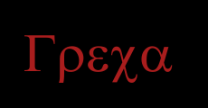

No hay buena forma de contar esta historia. No hay solución alguna, ni para el relato ni para nuestras vidas. No hay moraleja, ni aprendizaje, ni final poético. Es la historia de siempre, de todos, la historia del fracaso: de los sueños y ansias frustradas. Mucho me costó entender por qué del amor que no pasa, que no se olvida lentamente hasta que se llenan de musgo los sentimientos, del amor bien anclado, se llega a la desesperación del naufragio. Sin que ninguna tormenta rompa las ataduras, sin que la humedad corrompa las sogas. Y es que estos son malos días para el amor...
Estos son días malos para el amor. Días de fracasos. De tiempo perdido. De jornadas interminables a la intemperie del deseo. Malos, malos, malos días para amar.
Tenía una mujer que me llevaba por la cuesta del sexo hasta la cima. Que conquistaba conmigo la voluntad del cuerpo y sus recodos. Una mujer que se me hizo conocida de una manera intuitiva, imposible de contar o aprehender. Que arrastraba detrás de sí la gravedad del universo, y mi vida descansaba en la suave curva de esa atracción, moviéndose por los bordes hacía sus hondonadas. Una mujer de cuerpo afrodisíaco. Que me amaba con toda la debilidad de su corazón. Pero ya no está más conmigo, ni volverá.
Y es que estos son malos días para el amor. Cuando nos separamos y nos odiamos luego, o seguimos juntos, y nos odiamos ahora. Estos son días de interminable angustia, de sofocante desdicha, en los que el corazón se llena de arena. Son los últimos días del fracaso, de la disgregación, el fin del principio.
Tenía una mujer que me hizo feliz, con sencillez rural, de inmediato. Que dejaba un rastro de miel en mis oídos con sus palabras, y un murmullo lejano de soledad y equilibrio. Tenía una mujer que cerraba mi círculo. Que identificaba con mis premoniciones. Y el tormento de mis costas encontraba en sus playas alivio. Tenía la mujer que había buscado durante años, finalmente estábamos frente a frente, con una buena oportunidad. Y me amaba con toda la debilidad de su corazón. Pero ya no está más conmigo, ni volverá.
| THESE ARE BAD DAYS FOR LOVE; NO HOUSE; NO JOB; THESE ARE DEFINITLY BAD DAYS FOR LOVE. |
Son días malos para el amor. Días de búsqueda interminable y fútil. A través de las mazmorras del mundo. Reptando por los sedimentos que han dejado otros, empozados en el fondo del alma. Y la libertad se transforma en congoja, en desdicha, en un deambular mezquino por las barriadas de la inmoralidad.
No hay buena forma de contar esta historia, no tiene un final feliz, ni moraleja...
no hay buena forma de decir lo que siento, pues nada ha pasado y nada ha cambiado...
es la inmovilidad absoluta del tiempo, el presente eternamente repetido en un
futuro pospuesto... no hay buena forma de contar esta historia, quizás
porque no es una historia siquiera, porque no tiene nada de especial, porque
es simplemente una inflexión más del dolor humano, como otras
miles que se dan paralelamente, ignorándose entre ellas, desconociendo
el augurio irrepetible de su homogeneidad. No, no hay buena forma de hablar
de estos días... no tienen nada de especial, y nos atormenta su lacónica
insensatez, su absurdo callado y su hibris innegociable... no, no hay buena
forma de contar esta historia.